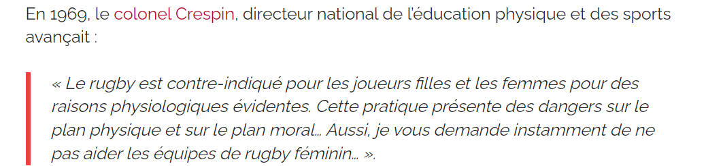
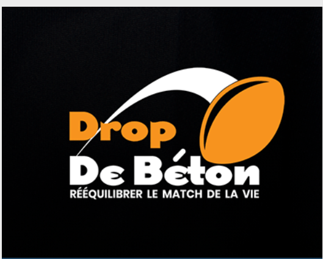

Les inégalités entre les femmes et les hommes dns le rugby reflètent des disparités plus larges présentes dans de nombreux domaines sportifs.Malgré les avancées des dernières décénies , les femmes qui pratiquent le rugby continuent de faire face à divers obstacles , tant dur le plan de la reconnaissance que des conditions de pratiques
L'une des principales inégalités réside dans la reconnaissancs et la visibilité médiatique. Les compétitions masculines de rugby,telles que le Tournoi des six Nations ou La Coupe du Monde bénificient d'une couverture médiatique bien plus importante que leurs homologues féminines .Cette différence de visisbilité se traduit par une moindre exposition des joueuses et,par conséquent,un manque de notoriété qui freine le dévloppement de rugby féminin.
Les inégalités financières sont également marquées.Les équipes féminines disposent souvent de budgets bien inférieurs à ceux des équipent masculines.Ce manque de financement se manifeste par des salaires pus bas pour les joueuses,des conditions d'entraînement moins optimales,et une moindre qualité des infrastructures.Les hommes bénéficient généralement de meilleurs terrains,d'équipements plus modernes,et de meilleures conditions de voyage et de séjours lors des compétitions.
L'accès à la formtion et au soutient technique est un autre domaine où les inégalités sont notables. Les entaîneurs et le personnel sont souvent plus nombreux et mieux qualifiés.Les joueuses,en revanche,ont moins souvent accès à des programes de formation avancés et à des experts dans divers domaines comme la préparation physique,la nutrition,et la psychologie du sport
Les stéréotypes de genre et les perceptions sociales jouent également un rôle majeur dans ces inégalités.Le rugby est traditionnellement peru comme un sport "d'homme",ce qui peut décourager les filles et les femmes de s'y engager pleinement dès le plus jeune âge.Cette perception entraîne une moindre participation féminine,un soutient communautaire réduit,et un difficulté accrue à attirer des sponsors et des partenariats commerciaux.
Malgré ces défis,des initiatives sont en place pour réduire ces inégalités.De nombreuses fédérations de rugby,ainsi que des organisation internationales,travaillent àpromouvoir le rugby féminin en augmentant les financements,en améliorant la visibilitémédiatique,et en soutenant des programmes de dévlopement spécifiqus pour les femmes.Les succès des éqquipes féminines sur la scène internatiale,ains que le rôle croissant des femmes dans la gestion et l'administration du sport,sont également des signes encourageants dr progrès
VOICI DONC QUELQUE ASSOCIATION QUI OEUVRE POUR L'EGALITE DANS LE RUGBY
